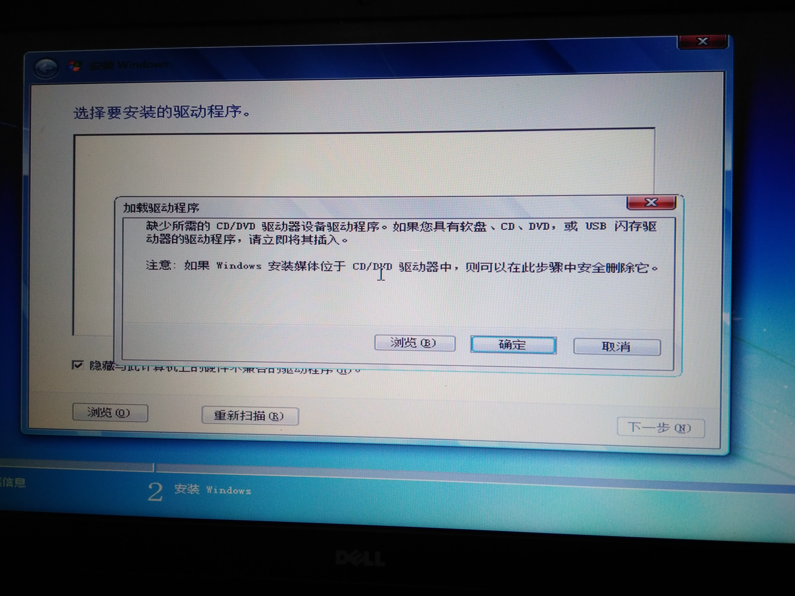

安装Windows7排除USB3驱动缺失问题的经历
本文共1500余字，预计阅读时间6分钟，本文同步发布于知乎（账号silaoA）和微信公众号平台（账号伪码人）。
关注学习了解更多的Cygwin、Linux、Python等技术。
给笔记本电脑装系统，本是件稀松平常的事情，时至今日（2019年8月）Windows 7已成为老旧系统，在10多年后的硬件上出现了水土不服。本文记录在Dell笔记本电脑安装Windows 7遇到“缺少所需的 CD/DVD 驱动器设备驱动程序”报错，以及解决过程。
0x00 常规操作
朋友的Dell笔记本电脑，换了固态硬盘，打算安装Windows 7，系统镜像为微软原生版本，试过PE、启动盘多个方法，总是存在问题而安装失败。
交给我后，做了如下常规操作：
- 进入BIOS，对Secure Boot、Legacy BIOS兼容、引导介质顺序等选项做了确认；
- 在U盘安装Windows PE环境，从U盘启动，确认了固态硬盘的分区表；
- 在PE环境下，使用
Windows安装器安装Windows 7旗舰版，但在重启后计划进入sysprep阶段时，引导失败，屏幕报错“缺少可引导介质”。
至此，确认了硬盘分区、BIOS设置是没问题的，同时放弃了PE环境Windows安装器的方法。
0x01 问题显现
将U盘格式化，使用rufus直接制作USB启动盘，使用rufus默认分区方案。从U盘引导启动顺利，熟悉的Windows安装程序界面也已出现，就在准备选择安装磁盘时，弹出“缺少所需的 CD/DVD 驱动器设备驱动程序”报错。

改换另一个老旧的U盘，使用相同方法制作成USB启动盘，从U盘引导启动顺利，熟悉的Windows安装程序界面也已出现，然而尴尬的是鼠标只能在屏幕左上角显现，移动、点击均无反应，键盘输入正常。
在网上包括微软官网查询了相关问题，给出的原因是，Windows 7已属老旧系统，原生镜像未包含USB 3驱动，在新一代CPU、固态硬盘、USB 3.0接口U盘时会出现安装问题，给出的方案包括：
- 更换老旧的U盘制作启动盘，或者插到USB 2.0的接口，重新启动；
- Windows安装程序到了报错的时候，重新插U盘，选择驱动程序路径；
- Intel官网下载
Windows 7 USB 3.0 Creator Utility，往镜像里注入USB 3驱动。
以上方案尝试均未起作用，Intel官网也没有Windows 7 USB 3.0 Creator Utility页面。
0x02 问题解决
在搜索Windows 7 USB 3.0 Creator Utility时发现，Intel官网虽然没有了页面，但找到了Intel为Windows 7提供的USB 3.0设备驱动介绍，也找到了相关文档，问题描述跟前面报错一样。
对照文档，了解了整个解决方案的思路：构造一个“Admin system”文件夹，准备好Intel USB 3.0 XHCI设备驱动程序，利用dism重新打包生成新的install.wim和boot.wim，再放回原启动盘里。
假使“Admin system”根路径为C:\win7，文件布局如下：1
2
3
4
5
6C:\win7\
intall.wim : 从启动盘sources目录下复制而来
boot.wim : 从启动盘sources目录下复制而来
mount\ : 临时文件夹，用于挂载映像文件
USB3\ : 手动创建
x64\ : USB 3（64位）驱动程序路径 <- Intel_USB_3.0_xHC_Driver_AlpineRidge_PV_5.0.0.32\Drivers\Win7\x64
dism工具注入USB 3.0驱动程序，分为3个过程：①改造install.wim ②改造boot.wim第一阶段 ③改造boot.wim第二阶段。可以使用dism命令行完成改造工作，也可以使用dismgui图形界面程序完成。由于未下载到dismgui，本文使用dism命令逐句操作，以下命令在一台运行着Windows系统的电脑上使用管理员身份打开cmd窗口再执行。1
2
3
4
5
6
7
8
9
10
11
12
13
14
15
16REM 挂载install.wim，注意index选项后的4,4是旗舰版、3是专业版、2是家庭专业版、1是家庭普通版
dism /Mount-wim /WimFile:"c:\win7\install.wim" /index:4 /MountDir:"c:\win7\mount"
REM 增加USB3（64位） 驱动
dism /image:"c:\win7\mount" /Add-Driver /driver:"c:\win7\USB3\x64" /ForceUnsigned /recurse
REM 提交修改至install.wim并卸载
dism /Unmount-wim /mountdir:"c:\win7\mount" /commit
REM 同样的操作施加于boot.wim(阶段1，注意index选项值是1)
dism /Mount-wim /WimFile:"c:\win7\boot.wim" /index:1 /MountDir:"c:\win7\mount"
dism /image:"c:\win7\mount" /Add-Driver /driver:"c:\win7\USB3\x64" /ForceUnsigned /recurse
dism /Unmount-wim /mountdir:"c:\win7\mount" /commit
REM 同样的操作施加于boot.wim(阶段2，注意index选项值是2)
dism /Mount-wim /WimFile:"c:\win7\boot.wim" /index:2 /MountDir:"c:\win7\mount"
dism /image:"c:\win7\mount" /Add-Driver /driver:"c:\win7\USB3\x64" /ForceUnsigned /recurse
dism /Unmount-wim /mountdir:"c:\win7\mount" /commit
最后，将C:\win7（“Admin system”）下新的install.wim、boot.wim复制至启动盘sources目录，替换掉原来的版本，重新引导，安装正常。
参考
更多阅读
- Cygwin前传：从割据到互补
- Cygwin系列（一）：Cygwin是什么
- Cygwin系列（九）：Cygwin学习路线
- Linux Cygwin知识库（一）：一文搞清控制台、终端、shell概念
- Linux Cygwin知识库（二）：目录、文件及基本操作
- Python项目如何合理组织规避import天坑
如本文对你有帮助，或内容引起极度舒适，欢迎分享转发或点击下方捐赠按钮打赏 ^_^
- 本文链接：https://silaoa.github.io/2019/2019-08-28-安装Windows7排除USB3驱动缺失问题的经历.html
- 版权声明：本文为原创文章，如需转载，请联系stsilaoa@gmail.com 或 公众号 伪码人 或知乎私信 silaoA。